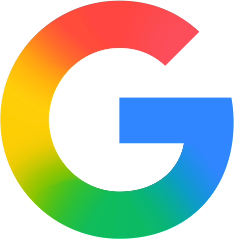
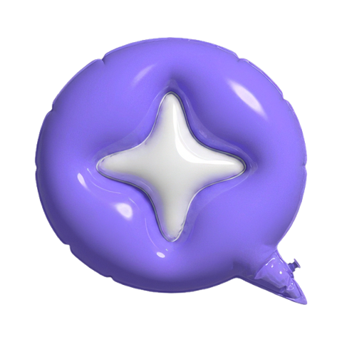
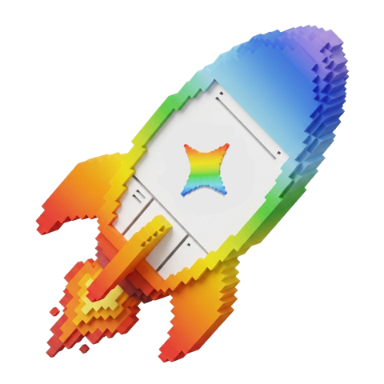

Embaixadores Estudantis do Google · OficinaTudo o que você precisa para a oficina em um só lugar: os desafios de lógica, os materiais para estudar no NotebookLM e os comandos prontos para criar seu painel de estudos e seu quiz de Roraima no Gemini.
Primeiro você entende como dar boas instruções. Depois usa a IA para organizar o estudo, cria sua ferramenta de estudo e, no final, programa um jogo de perguntas com ranking, só conversando com a IA.
Um algoritmo é uma sequência de instruções claras, em ordem, para resolver um problema. O computador, e também a IA, segue o que você manda. Se a instrução estiver confusa, o resultado sai errado.
Resolva junto com a turma e veja cada passo virar uma instrução do algoritmo.
| Receita de bolo | Algoritmo | Prompt para a IA |
|---|---|---|
| Ingredientes | Entrada | Contexto e arquivos |
| Modo de preparo | Instruções | O que você pede, em ordem |
| Bolo pronto | Saída | A resposta da IA |
Quanto mais clara a receita, melhor o bolo. Com prompts é igual.
No NotebookLM você cria um caderno fechado sobre um assunto. A IA responde só com base nos arquivos que você enviar e mostra de onde tirou cada resposta. Assim ela inventa muito menos.
Por que três textos? Eles são do mesmo tema e se completam. O NotebookLM consegue ligar as ideias entre eles, o que fica ótimo no mapa mental.
Em casa, faça o mesmo com o PDF, os slides ou as fotos do caderno de qualquer matéria.
Os nomes podem variar um pouco na sua tela. Alguns recursos podem não estar liberados para contas de menores de 18 anos.
Edite o texto se quiser e clique em Copiar. Depois cole no chat do seu caderno.
Com o Canvas, você descreve o que quer e o Gemini cria uma página interativa. Monte abaixo o seu pedido. O comando vai sendo escrito sozinho, e você pode editar antes de copiar.
O primeiro resultado raramente é o final. Peça uma mudança por vez. Você também pode selecionar uma parte do painel e pedir mudança só nela.
O progresso marcado no painel pode não ficar salvo para sempre. Trate o painel como um protótipo que você pode melhorar.
A IA é uma ótima ferramenta de estudo quando você continua pensando. Quatro regras para levar:
Ela pode inventar datas, números e fontes com muita confiança. Confira o que for importante.
Usar para entender é aprender. Entregar a resposta pronta é colar.
Cada professor tem regras sobre o uso de IA nos trabalhos. Combine antes.
Nada de senhas, documentos ou dados pessoais seus ou de outras pessoas.

Agora você vai programar um jogo de perguntas e respostas com tempo, pontos e ranking, como os jogos de auditório, sem escrever uma linha de código. Você descreve o jogo, e a IA programa.
Este é um exemplo feito com IA. Jogue uma vez para entender a ideia e depois crie o seu, do seu jeito.
Como funciona o ranking: o placar fica salvo no computador em que o quiz está aberto. Joguem em dupla, um de cada vez. No final, troquem de computador e tentem bater o recorde do quiz do colega.
Confira as respostas: a IA pode errar fatos sobre Roraima. Se achar um erro, peça a correção. Isso também é vibe coding.
Escolha a matéria e o assunto uma vez. Os seis prompts abaixo se ajustam sozinhos. Edite o que quiser, copie e abra a ferramenta indicada.
Tudo funciona no navegador, sem instalar nada. Alguns recursos podem estar limitados para menores de 18 anos ou para contas escolares.

O Gemini vira professor: explica em partes, faz perguntas e confere se você entendeu antes de seguir. Os botões abaixo já abrem o Gemini com o pedido escrito.
Um Gem é um Gemini com instruções fixas. No Gemini, abra Gems e clique em Novo Gem. Cole as instruções abaixo, trocando a matéria e o curso.